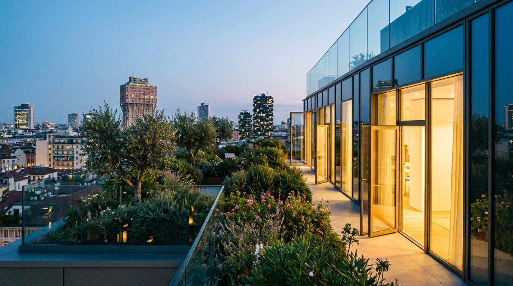
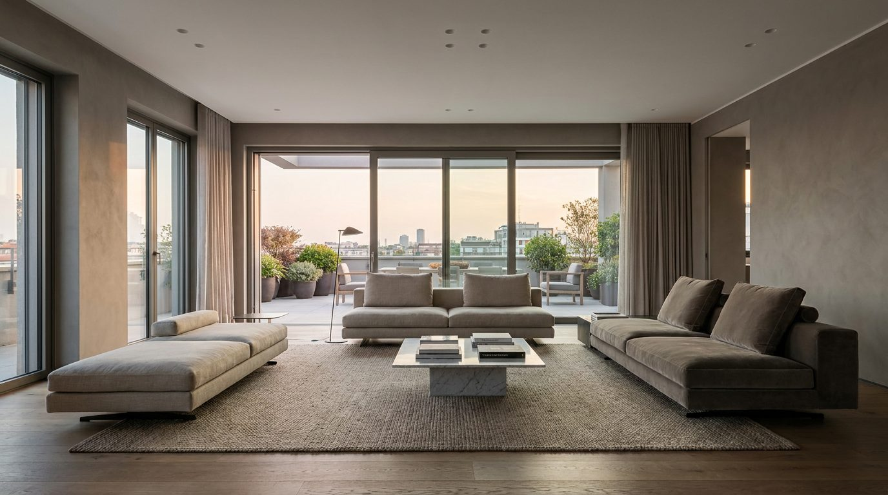

Atlante · IT-12 · Italia · Nord
Attico contemporaneo con terrazza
Esempi · esterno e interno


Architettura · elementi riproducibili
- 100-200 mq, altezza 2,9-3,2 m
- vetrate scorrevoli a tutta altezza
- terrazza 80-150 mq con parapetto in vetro
- pavimento in gres grande formato o rovere
- controsoffitto con luce lineare
- cucina a isola in continuità col soggiorno
- Orizzonte urbano o verde pensile fuori.
Luce
esposizione su due o tre lati, luce radente lunga al tramonto; interno molto chiaro, rischio di sovraesposizione sulle vetrate.
Prompt di generazione (EN)
Contemporary Milan penthouse, 3 m ceiling, floor-to-ceiling sliding glass onto a planted terrace, large-format warm grey stone floor, linear recessed lighting, city skyline beyond, low golden sun raking across the room, 24 mm, bright neutral grade with terracotta accents.